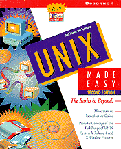

UNIX Made Easy
John Muster and Associates
McGraw Hill
Price: $34.95
Those of us who have been online a bit longer like to feel we're more adroit than this influx of
technically unskilled "newbies." No one needs to sell us special software to create fancy HTML
documents--we can do the coding ourselves, thank you very much. Going further back, those of
us who regularly used a Telnet application to e-mail, surf via Lynx, or FTP files were tapping
directly into the backbone of the Internet. And though today's users may not need to be aware of
that underlying structure, those who wish to find out more about it can still use Telnet as a
learning tool.
Telnetting into your account on your Internet Service Provider's machine puts you in touch with
one of the most powerful and elegant operating systems out there: UNIX. Most of the Internet
itself relies on UNIX, and a basic understand of this OS allows insight into the inner workings of
the Net.
John Muster's UNIX Made Easy (McGraw Hill) introduces you to this OS and attempts to make
you a UNIX expert within its 1,000 pages. Start with simple tutorials explaining the login
process and work your way through shell programming. The book is written with the assumption
that you're accessing a machine running UNIX from a terminal (at school or work), but
Telnetting (or using a terminal program) into your account on your ISP's machine usually gives
you access to a standard version of UNIX.
Some sections of the book, like the one on printing files, won't be as useful for dial-up users. A
few examples won't work due to strict security measures necessary for machines that are
accessible from the Net. Muster takes into account the fact that there are multiple versions of
UNIX out there, and that not all users will have the same access level. Directions are given for
users on both C shell and Korn shell levels. If you don't know a C shell from a Korn shell, this
book offers clear explanations and uses tutorials to answer questions that might arise. Commands
are explained, as are many of the most common options for those commands. Readers are also
encouraged to experiment with their new knowledge. Users familiar with some aspects of the OS
will benefit from the more technical information available here.
At times the book seems a bit non-linear in its delivery--for example, it breaks off a tutorial on
commands to present a detailed course in the use of the Visual Editor (vi). Some material seems
repetitious, while other chapters deluge the reader with more information than can easily be
absorbed. But the overall usefulness of this book is indisputable. By setting your own pace, and
trying your own variations of the tutorials, you'll soon have a whole new OS under your belt.

(out of 5)

The newest Internet users are being lured online by promises of easy-to-use software that doesn't
require any computer know-how beyond "point and click." For most of these people, the Web is
the Internet, Archie and Veronica are cartoon characters, and UNIX is just some archaic
operating system (OS) for hackers and shut-ins. A few of these people even "surf" on their TV
sets.
| -- Troy Brophy |